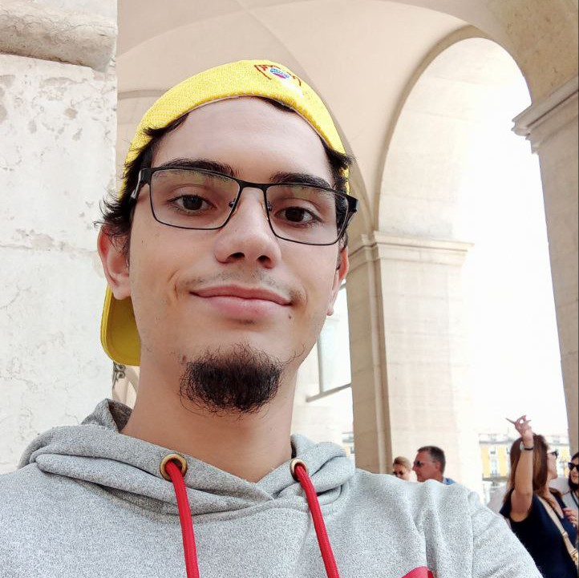

About me
I am an electronical technician and web design student, enthusiast of technology and can bring honesty, proactivity, and a strong team-oriented mindset to problem-solving. My background includes valuable experience in customer service, where i prioritize respect and kindness to deliver exceptional interactions. Currently, I am focused on expanding my skill set by delving into the world of web development, actively learning HTML, CSS, JavaScript and other languages recognizing their pivotal role in the modern professional landscape. I am excited to embrace these languages as powerful tools for crafting engaging and user- friendly digital experiencesExperiences
-
2016-2022 / Self-employment
Personal computer maintainer
I have extensive experience in maintaining personal computers: Backing up and formatting data to ensure information security. Identifying and solving hardware and software problems, including replacing parts. parts. Updating Linux and Windows operating systems. Administering computer systems. -
2013-2014 / Autobuses Colectivos El Arenal C.A - Caracas, Venezuela
Car mechanic's assistant
Supporting the mechanic by facilitating access to tools, organizing materials and inventory. Cleaning cars, including the interior, upholstery and exterior. Cleaning and replacing simple parts. Customer service support -
10/2022 – 12/2022 / Buscafé Palabras con Crema - Caracas, Venezuela
Waiter and kitchen helper
The tasks were customer service, table service, organizing the inventory, kitchen helper (preparing food and simple meals as well as supporting complex meals), cleaning the establishment and waiting tables. Responsibility for opening and closing the restaurant. -
07/2023 - Atual / JGS Eletrônica - Mem Martins, Portugal
Electronic technician assistant
Electronic repairs: TVs, consoles, computers, electronic boards, installation of CCTV, video intercoms, alarms.